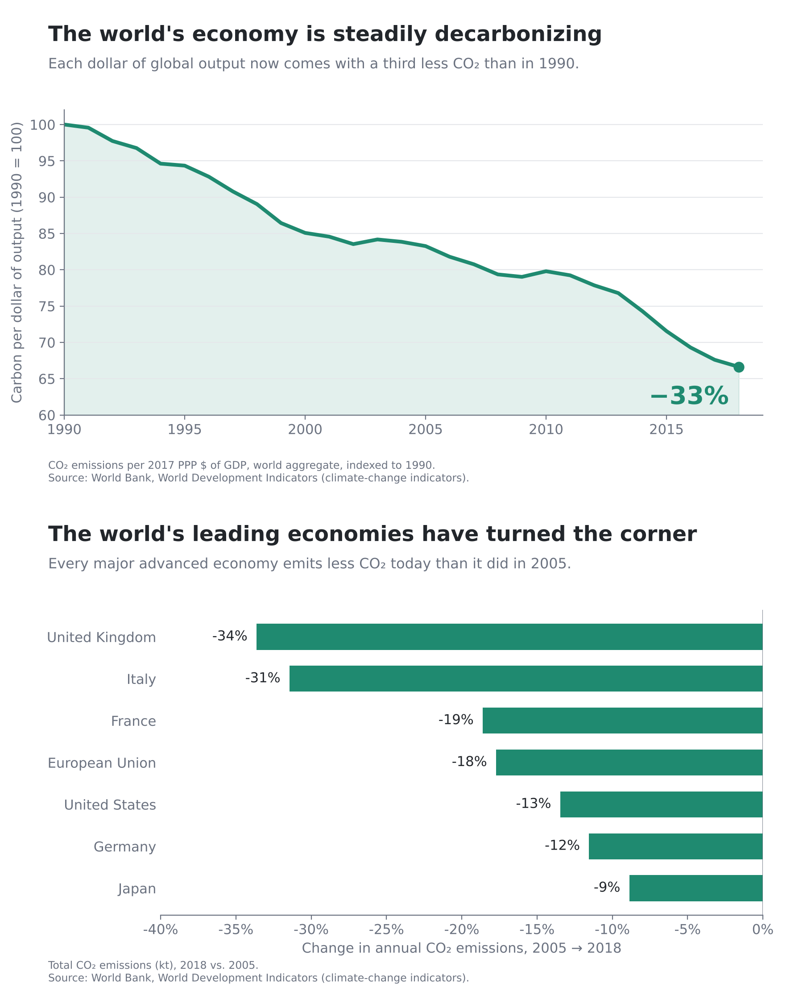
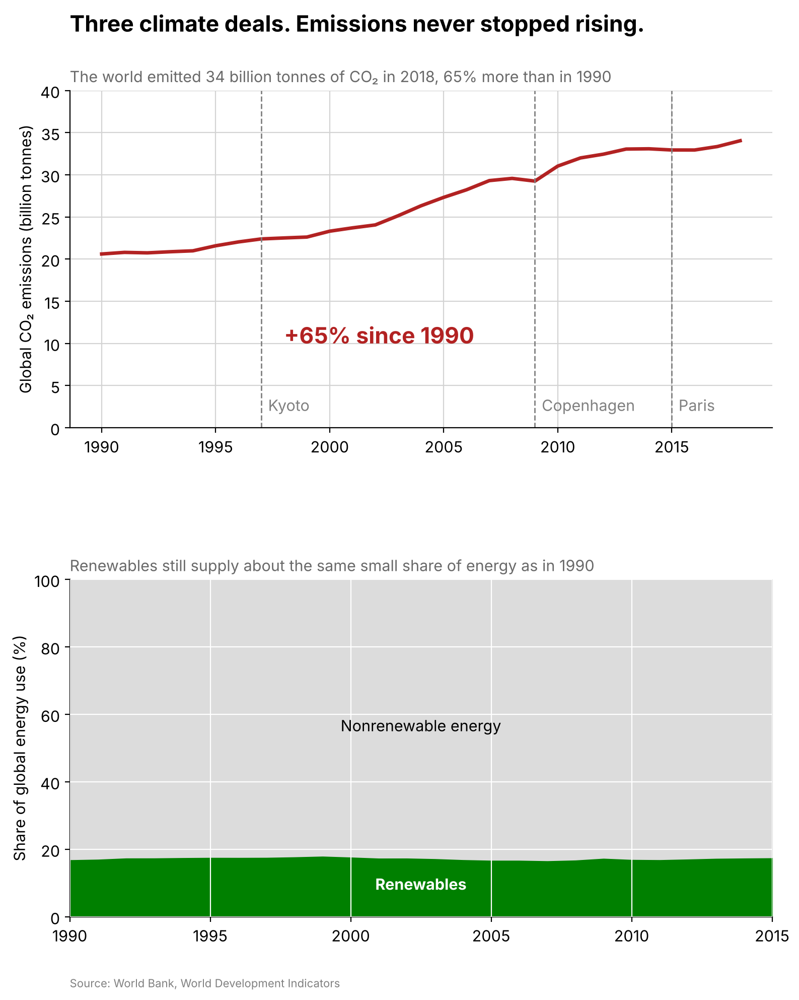

Proposition: The world is making real progress on cutting carbon emissions.
Both visualizations use the World Bank climate change indicators for the world and a few countries from 1990 to 2018.
FOR the Proposition

Design Decisions and Rationale:
- Carbon per dollar instead of total emissions. Score −2. This chart shows how much CO2 the world puts out for every dollar of GDP, which dropped 33%. Total emissions actually went up 65% over the same years, but the title says the economy is "decarbonizing," and most people will read that as emitting less. I tried emissions per person first, but that went up too, so it didn't work for this side.
- Indexing to 1990 and starting the y axis at 60. Score −1. Setting 1990 to 100 makes the drop easy to read, but it hides the real units. Starting the axis at 60 makes the line fall through most of the chart. The axis is still labeled, so it's there if you look closely.
- Starting the country comparison in 2005. Score −1.5. Each bar is the percent change from 2005 to 2018. That year is right around when emissions peaked in the US and Japan, so every bar comes out negative. Starting at 1990 would have the US up 3% and Japan up 1%.
- Leaving out China and India. Score −1.5. Their emissions grew 77% and 114% over the same period, which would flip the whole message. The subtitle says "every major advanced economy," which is true for the countries shown, so it's hard to call out.
- Green, exact labels and a source note. Score +1.5. Green reads as good news, and the exact percentages and World Bank source make the chart look trustworthy. These are honest choices on their own, but they make the selective parts easier to believe.
AGAINST the Proposition

Design Decisions and Rationale:
- Total emissions starting at zero. Score +2. Total CO2 is what actually causes warming, so I converted kilotons to billions of tonnes and calculated the 65% increase since 1990. Starting at zero shows the rise at its real size. This was the most honest choice in the project and also the most convincing, which was kind of surprising.
- Marking Kyoto, Copenhagen and Paris. Score −0.5. The dashed lines make it look like each deal failed, since emissions just keep climbing past them. None of these deals had a binding global cap though, and Paris didn't take effect until the end of 2016, so it's a little unfair.
- "Emissions never stopped rising." Score −1. It matches the overall trend, but it isn't literally true. Emissions dipped in 2009 and stayed flat in 2015 and 2016. "Emissions keep rising" would be more accurate, but "never stopped" sticks better.
- Renewables on a 0 to 100% scale. Score −1. Everything that isn't renewable is stacked as a big gray block above the green, so 17% looks tiny and flat. I also used total energy instead of electricity, where the renewable share actually went from 19% to 22%. Both are real World Bank numbers, and I just picked the one that fit.
- Red for emissions, green for renewables. Score +0.5. Red makes the rising line feel like a warning. Using the same green from the FOR side makes it obvious the good part isn't growing. The colors add emotion but don't change any numbers.
Final Reflection
The AGAINST side was a little easier to analyze. The total emissions on a normal chart starting at zero were convincing on their own, so most of the work was the title and annotations. The FOR side was more challenging because almost every honest measure increases. I had to change the question from whether emissions are falling to whether each dollar of output is getting cleaner or whether rich countries are cutting back. The surprising part is that the numbers are consistent on the FOR charts. Everything is accurate and sourced, and all the persuasion comes from which metric, which year and which countries I picked.
That changed how I think about ethical visualization. I’d consider a chart ethical if another researcher would come to similar conclusions after seeing the data I left out. The carbon per dollar chart and the 2005 bar chart both fail that test, because seeing total emissions or China and India would probably flip what you think. The total emissions chart passes, since adding the other numbers just adds detail without changing the takeaway.
I don’t think any single technique defines a clear ethical boundary. A cut off axis or a hand-picked year can be fine in one chart and misleading in another. The line I’d draw is the gap between what a chart shows and what it makes people believe. Bold colors, confident titles and annotations are fine when they point at the main pattern. They cross an ethical line when they only work because the reader doesn’t know what got left out.